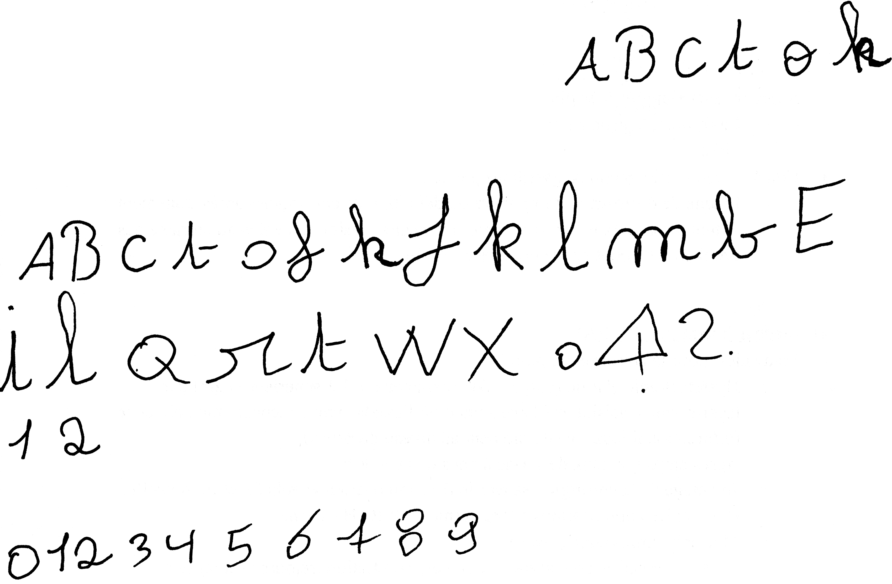

This website is dedicated to typography, in its form, creation and use. All typos were created in the workshop by people with intellectual disabilities. Typography is freely available.
This first font has been designed by Natacha Levaux, it has been named after her favourite pop star Rihanna.
This font has been designed by John Doe, it has been named after his dead dog Rex.
This font has been designed by John Doe II, it has been named after his dead parrot, also Rex.